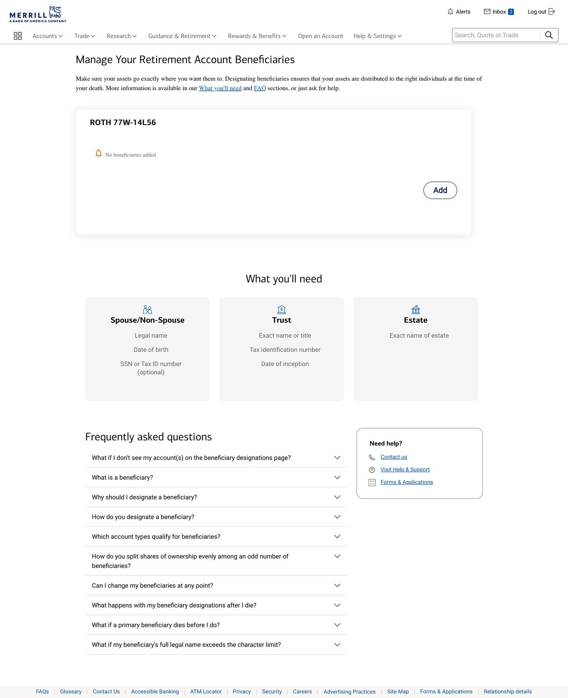
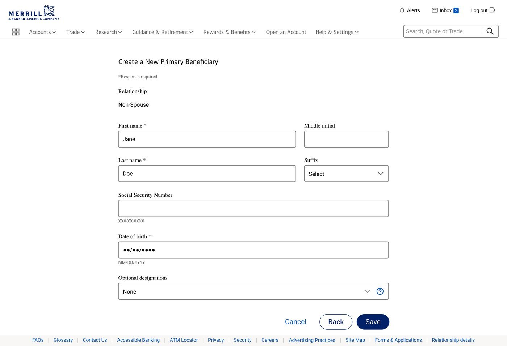
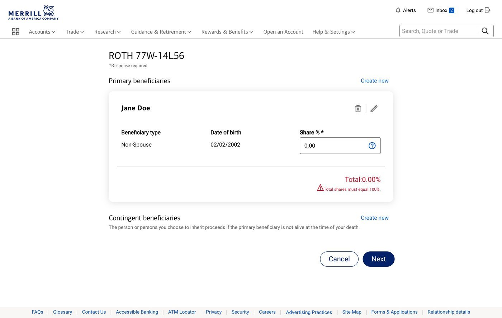
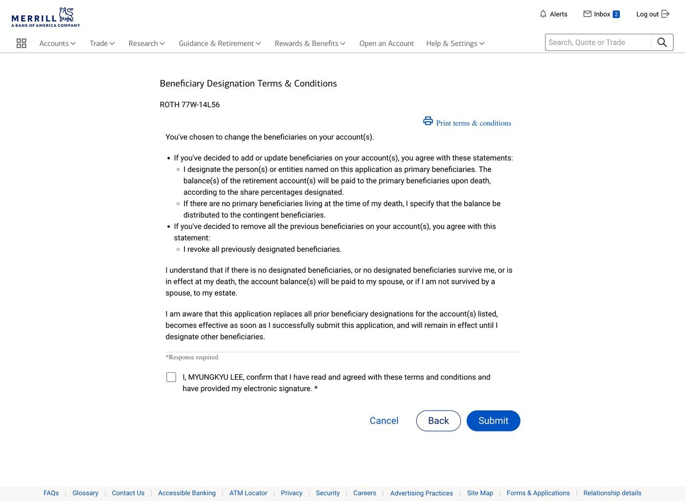

Digitizing a process that had always lived on paper — letting clients designate and manage retirement account beneficiaries directly in their digital experience, with no existing pattern to build from and a legal/compliance domain I had to learn from scratch.
Before this project, designating a beneficiary on a retirement account was a paper process — clients filled out and submitted a physical form, disconnected entirely from their digital account experience. My job was to digitize it: design a net-new experience with no existing digital pattern in the product to build from.
The domain itself was the first real challenge. Beneficiary designation carries a lot of legal and compliance weight, and it was a topic I was largely unfamiliar with going in — data validation rules around beneficiary names and share percentages, how to structure the information architecture for something this legally sensitive, and what "correct" even looks like from a compliance standpoint all had to be learned as part of doing the work.
Beneficiary designations come with real legal weight, and the rules governing them (validation of beneficiary information, how allocations must work) weren't things the design team already had deep expertise in — a meaningful part of the work was learning the domain well enough to design it correctly.
Because this had only ever existed on paper, there was no prior digital IA or interaction pattern to adapt — the structure had to be designed from first principles rather than evolved from something that already existed.
Beneficiary share percentages across multiple people must sum to exactly 100% for a designation to be valid — a constraint that had to be designed for clearly, so clients could self-correct rather than submit an invalid designation.




I started as one of two designers on this project, with an Associate Director as lead. Partway through, I inherited the project and stepped into the lead designer role myself — directing a content strategist and carrying the work through delivery to the development team, while partnering closely with product throughout.
This shipped and went live in November 2024 — a $5M project that replaced a fully paper-based process with a self-service digital experience. Figures below compare against a 12-month baseline (April 2024–April 2025).
Retirement-specific call volume from CI dropped even as CI's total inbound call volume rose over the same period — I read this as the feature successfully deflecting a category of call that used to require an agent, independent of what drove the broader increase in overall call volume.
Same lesson as the other work on this site: I'd have pushed for broader UX strategy thinking earlier, and a deeper understanding of beneficiary designation's legal implications and constraints, before getting into the detail of individual screens.
Across this project and the other two here, there's a consistent throughline in how I'm growing as a designer — moving from strength in execution toward strength in direction: understanding a domain and a product deeply enough to set the strategy, not just design the screens that follow from it.